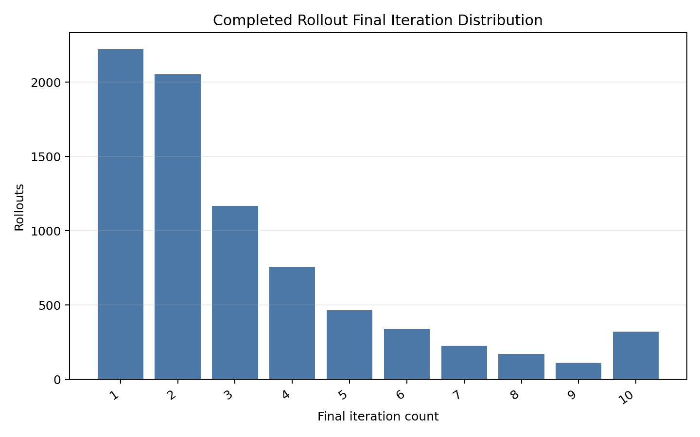
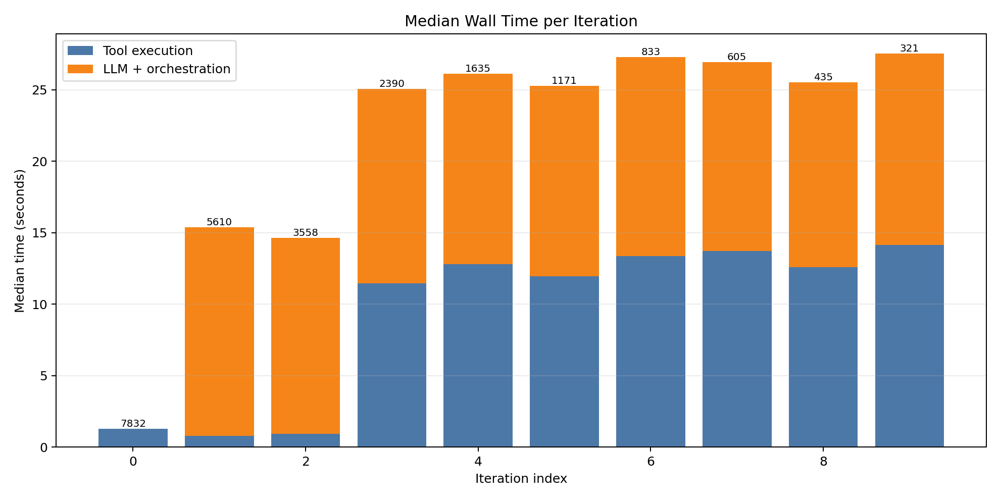
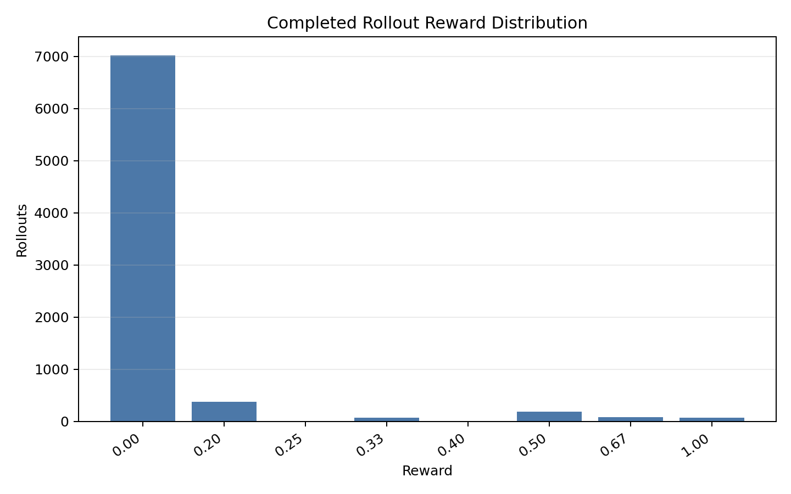

Runtime Analysis Viewer
Run: privacy_agent_qwen3_8b_no_plan_companyctx_planningonly_v1
This viewer is generated from the saved actor logs and per-rollout session artifacts. Tool timings are exact at the action level; LLM timings are exact overall but only prompt sizes are attributable to specific call types because the actor logs request durations without request IDs under concurrency.
Overview Plots
These are the quickest plots to check for overall throughput shape, rollout duration, and how often the agent keeps iterating.
LLM Latency Distribution
Overall LLM request latency. Exact latency by log_name is not recoverable from the concurrent actor logs.

Rollout Duration Distribution
Completed rollout wall-clock durations, filtered to rollouts with a final report artifact.

Iteration Count Distribution
Final iteration counts across completed rollouts.


Actions Per Rollout
How many tool actions each completed rollout executed before producing a report.

Context + Iteration Behavior
This section is usually the most useful for explaining why the run feels slow. It focuses on prompt size and how each extra iteration adds wall time.
Prompt Tokens by LLM Call Type
Large adaptive prompts dominate; the second panel now shows a median token breakdown by prompt section instead of a fraction.

Rollout Duration by Final Iteration
Completed rollout time split by how many iterations the agent ended up using.

Median Time per Iteration
Median wall time per iteration, split into tool execution versus residual LLM and orchestration time.


LLM Token Usage
These views use the explicit `privacy_agent llm call summary` lines emitted by the rollout adapter. They show response tokens and aggregate token volume by call type and rollout.
Response Token Distribution
Overall response-token distribution across logged privacy-agent LLM calls.

Response Tokens by LLM Call Type
Per-call response-token distribution grouped by log_name.

Token Totals by LLM Call Type
Aggregate prompt versus response token volume for the most expensive call types.

Token Totals by Rollout
Aggregate prompt versus response token volume for the most token-heavy completed rollouts.

Reward Spot Checks
These views recompute reward from the saved report answers against the dataset ground truth, then show a reproducible random sample of rollout reports for manual inspection.
Rollout Reward Distribution
Reward counts recomputed from saved reports and dataset ground truth.


Rollout Reward Stats
| Statistic | Reward |
|---|---|
| count | 7,832 |
| mean | 0.042 |
| median | 0.000 |
| min | 0.000 |
| p90 | 0.200 |
| p95 | 0.333 |
| p99 | 0.667 |
| max | 1.000 |
Reward Distribution
| Reward | Rollouts |
|---|---|
| 0.00 | 7,023 |
| 0.20 | 376 |
| 0.25 | 1 |
| 0.33 | 72 |
| 0.40 | 11 |
| 0.50 | 193 |
| 0.67 | 86 |
| 1.00 | 70 |
DR0001_25cbf112_16fde35a | reward=0.000 | hops=0/4
Task: DR0001
Iterations: 2 | Actions: 6 | Duration: 53.53 s
Predicted final answer: NOT_FOUND
Ground-truth final answer: Q2 2022
Question preview: 1. In what year did Chaad complete a residency with the Contemporary Art? 2. In what quarter of (1) did Lee's Market launch its LED lighting retrofit program? 3. What percentage reduction in overall lighting energy expenditure resulted from the initiative launched in (2)? 4 (final). In which quarter did Lee's Market achieve a (3) reduction in transit times?
| Hop | Predicted | Ground Truth | Correct | Match |
|---|---|---|---|---|
| 1 | NOT_FOUND | 2022 | false | 0.000 |
| 2 | NOT_FOUND | Q3 2022 | false | 0.000 |
| 3 | NOT_FOUND | 12% | false | 0.000 |
| 4 | NOT_FOUND | Q2 2022 | false | 0.000 |
Report path: /mnt/llmd/results/exps/alexg/reason/privacy_agent_qwen3_8b_no_plan_companyctx_planningonly_v1/privacy_agent_runs/DR0001_25cbf112_16fde35a/workspace/research_report_20260414_232238.md
# Research Findings: 1. In what year did Chaad complete a residency with the Contemporary Art? 2. In what quarter of (1) did Lee's Market launch its LED lighting retrofit program? 3. What percentage reduction in overall lighting energy expenditure resulted from the initiative launched in (2)? 4 (final). In which quarter did Lee's Market achieve a (3) reduction in transit times? <think> Okay, let me try to figure this out. The user has given a set of questions that need answers based on some evidence. But looking at the available evidence, there's nothing listed. All the questions are about Lee's Market and Chaad's residency with Contemporary Art. Since there's no evidence provided, I can't find any information to answer these questions. For the first question, about the year Chaad completed the residency, without any documents or data, it's impossible to know. Same with the other questions referencing quarters and percentages. The task context gives some background about Lee's Market but not specific details about the LED program, energy reduction, or transit times. Since the rules state that if I can't determine the answer, I should write NOT_FOUND. Each answer needs to be a short exact answer, but without evidence, all of them would be NOT_FOUND. The justifications need to cite DOC:doc_id, but there are no docs here. So, I have to follow the rules strictly and indicate that the information isn't available. </think> ANSWER_1: NOT_FOUND JUSTIFICATION_1: No evidence provided ANSWER_2: NOT_FOUND JUSTIFICATION_2: No evidence provided ANSWER_3: NOT_FOUND JUSTIFICATION_3: No evidence provided ANSWER_4: NOT_FOUND JUSTIFICATION_4: No evidence provided ANSWER_FINAL: NOT_FOUND JUSTIFICATION_FINAL: No evidence provided <|im_end|>
DR0001_25cbf112_73175b78 | reward=0.000 | hops=0/4
Task: DR0001
Iterations: 1 | Actions: 3 | Duration: 26.89 s
Predicted final answer: NOT_FOUND
Ground-truth final answer: Q2 2022
Question preview: 1. In what year did Chaad complete a residency with the Contemporary Art? 2. In what quarter of (1) did Lee's Market launch its LED lighting retrofit program? 3. What percentage reduction in overall lighting energy expenditure resulted from the initiative launched in (2)? 4 (final). In which quarter did Lee's Market achieve a (3) reduction in transit times?
| Hop | Predicted | Ground Truth | Correct | Match |
|---|---|---|---|---|
| 1 | NOT_FOUND | 2022 | false | 0.000 |
| 2 | NOT_FOUND | Q3 2022 | false | 0.000 |
| 3 | NOT_FOUND | 12% | false | 0.000 |
| 4 | NOT_FOUND | Q2 2022 | false | 0.000 |
Report path: /mnt/llmd/results/exps/alexg/reason/privacy_agent_qwen3_8b_no_plan_companyctx_planningonly_v1/privacy_agent_runs/DR0001_25cbf112_73175b78/workspace/research_report_20260414_194036.md
# Research Findings: 1. In what year did Chaad complete a residency with the Contemporary Art? 2. In what quarter of (1) did Lee's Market launch its LED lighting retrofit program? 3. What percentage reduction in overall lighting energy expenditure resulted from the initiative launched in (2)? 4 (final). In which quarter did Lee's Market achieve a (3) reduction in transit times? <think> Okay, let's see. The user provided a set of questions that need to be answered with short, exact answers and justifications. The context is about Lee's Market and some initiatives they did. The available evidence is empty, which is a bit confusing. Wait, the available evidence is listed as [], so there's no documents provided. That means I can't reference any documents for the justifications. But the rules say if I can't determine the answer, I should write NOT_FOUND. So for each question, I have to check if there's evidence. Since there's none, all the answers would be NOT_FOUND. Let me go through each question one by one. Q1 asks about the year Chaad completed a residency with Contemporary Art. Since there's no info, answer is NOT_FOUND. Q2 is about the quarter in (1) when Lee's Market launched LED retrofit. Since (1) is not known, and no data, NOT_FOUND. Q3 is percentage reduction from the initiative in (2). Again, no data, so NOT_FOUND. Q4 refers to the quarter when transit times reduced by (3)%. Since (3) is unknown, and no info, NOT_FOUND. The final answer would combine all these, but all are NOT_FOUND. So each answer is NOT_FOUND, and the justifications cite the lack of evidence. But the user said to use only provided evidence, which is none. Therefore, all answers are NOT_FOUND. </think> ANSWER_1: NOT_FOUND JUSTIFICATION_1: No evidence provided ANSWER_2: NOT_FOUND JUSTIFICATION_2: No evidence provided ANSWER_3: NOT_FOUND JUSTIFICATION_3: No evidence provided ANSWER_4: NOT_FOUND JUSTIFICATION_4: No evidence provided ANSWER_FINAL: NOT_FOUND JUSTIFICATION_FINAL:
DR0003_4c20816c_3c6984e9 | reward=0.000 | hops=0/2
Task: DR0003
Iterations: 1 | Actions: 2 | Duration: 27.42 s
Predicted final answer: NOT_FOUND
Ground-truth final answer: the end of Q4 2024
Question preview: 1. What was the renewable energy usage percentage at Lee's Market as of Q1 2024? 2 (final). By when does Lee's Market anticipate achieving a (1) improvement in website performance?
| Hop | Predicted | Ground Truth | Correct | Match |
|---|---|---|---|---|
| 1 | NOT_FOUND | 25% | false | 0.000 |
| 2 | NOT_FOUND | the end of Q4 2024 | false | 0.000 |
Report path: /mnt/llmd/results/exps/alexg/reason/privacy_agent_qwen3_8b_no_plan_companyctx_planningonly_v1/privacy_agent_runs/DR0003_4c20816c_3c6984e9/workspace/research_report_20260414_230939.md
# Research Findings: 1. What was the renewable energy usage percentage at Lee's Market as of Q1 2024? 2 (final). By when does Lee's Market anticipate achieving a (1) improvement in website performance? <think> Okay, let's tackle these questions. First, I need to answer each of the two questions with a short, exact answer and a brief justification. The user provided the original research questions and the task context, but the available evidence is empty. That means there's no data to reference here. Starting with question 1: What was the renewable energy usage percentage at Lee's Market as of Q1 2024? Since there's no evidence provided, I can't find a specific number. The answer would be NOT_FOUND because there's no data to support it. Next, question 2: By when does Lee's Market anticipate achieving a (1) improvement in website performance? Again, without any evidence, I can't determine the timeframe. The answer here would also be NOT_FOUND. The user mentioned that if a question references a previous answer, I should resolve it, but in this case, both questions are independent and neither has evidence. So both answers are NOT_FOUND. For the final answer, since both sub-answers are NOT_FOUND, the justification would explain that there's no available evidence to answer either question. I need to make sure I follow the format strictly, using exactly the required lines without any extra text. Each answer and justification must be concise, and the justifications must cite DOC:doc_id, but since there's no evidence, I can't use any. Wait, the rules say if there's no evidence, write NOT_FOUND. So the justifications should state that. But the user said each justification must include at least one when evidence exists. If there's no evidence, maybe the justification is just a note? Wait, the example might have different handling. But according to the rules, if you can't determine the answer, write NOT_FOUND. So for both answers, they are NOT_FOUND. The justificatio
DR0005_51277225_cbaaa514 | reward=0.000 | hops=0/2
Task: DR0005
Iterations: 1 | Actions: 2 | Duration: 25.59 s
Predicted final answer: NOT_FOUND
Ground-truth final answer: Rotten Tomatoes
Question preview: 1. What was the compliance rate with health and safety training at the company in 2022? 2 (final). What review aggregator assigned a (1) score to "If Beale Street Could Talk"?
| Hop | Predicted | Ground Truth | Correct | Match |
|---|---|---|---|---|
| 1 | NOT_FOUND | 95% | false | 0.000 |
| 2 | NOT_FOUND | Rotten Tomatoes | false | 0.000 |
Report path: /mnt/llmd/results/exps/alexg/reason/privacy_agent_qwen3_8b_no_plan_companyctx_planningonly_v1/privacy_agent_runs/DR0005_51277225_cbaaa514/workspace/research_report_20260415_001614.md
# Research Findings: 1. What was the compliance rate with health and safety training at the company in 2022? 2 (final). What review aggregator assigned a (1) score to "If Beale Street Could Talk"? <think> Okay, let's tackle these questions. First, the user is asking about the compliance rate with health and safety training at Lee's Market in 2022. The available evidence is empty, so there's no data here. I need to note that as NOT_FOUND. Next, the second question is about which review aggregator gave a (1) score to "If Beale Street Could Talk". Again, the evidence is empty. Since there's no info, I have to mark this as NOT_FOUND too. For the final answer, since both sub-questions can't be answered with the given evidence, I should state that both are not found. The justification would mention the lack of evidence in the provided documents. </think> ANSWER_1: NOT_FOUND JUSTIFICATION_1: No evidence provided ANSWER_2: NOT_FOUND JUSTIFICATION_2: No evidence provided ANSWER_FINAL: NOT_FOUND JUSTIFICATION_FINAL: Sub-answers lack supporting evidence <|im_end|>
DR0010_0db8a3e5_1e5fe45a | reward=0.000 | hops=0/5
Task: DR0010
Iterations: 3 | Actions: 6 | Duration: 88.37 s
Predicted final answer: NOT_FOUND
Ground-truth final answer: Colombia
Question preview: 1. What percentage of MediConn Solutions' case study downloads came from healthcare professionals? 2. What month had (1) coverage of country of birth information for secondary schools? 3. What percentage of children in state-funded secondary schools in England were born inside the UK in (2)? 4. What year did MediConn Solutions achieve a client retention rate of (3)? 5 (final). In which country was the Spanish translation of Freedom's Captives published in (4)?
| Hop | Predicted | Ground Truth | Correct | Match |
|---|---|---|---|---|
| 1 | NOT_FOUND | 75% | false | 0.000 |
| 2 | NOT_FOUND | January 2018 | false | 0.000 |
| 3 | NOT_FOUND | 90% | false | 0.000 |
| 4 | NOT_FOUND | 2023 | false | 0.000 |
| 5 | NOT_FOUND | Colombia | false | 0.000 |
Report path: /mnt/llmd/results/exps/alexg/reason/privacy_agent_qwen3_8b_no_plan_companyctx_planningonly_v1/privacy_agent_runs/DR0010_0db8a3e5_1e5fe45a/workspace/research_report_20260414_215353.md
# Research Findings: 1. What percentage of MediConn Solutions' case study downloads came from healthcare professionals? 2. What month had (1) coverage of country of birth information for secondary schools? 3. What percentage of children in state-funded secondary schools in England were born inside the UK in (2)? 4. What year did MediConn Solutions achieve a client retention rate of (3)? 5 (final). In which country was the Spanish translation of Freedom's Captives published in (4)? <think> Okay, let me try to work through this. The user has given a series of questions that need to be answered with short, exact answers and justifications. The original questions are interconnected, so I have to make sure each answer references the previous ones correctly. Starting with question 1: What percentage of MediConn Solutions' case study downloads came from healthcare professionals? The available evidence is empty, so I can't find any data here. The answer would be NOT_FOUND because there's no information provided. Question 2 asks for the month with coverage of country of birth info for secondary schools. Again, no evidence is given. So, NOT_FOUND. Question 3 is about the percentage of children in state-funded secondary schools in England born in the UK during the month mentioned in question 2. Since question 2's answer is unknown, this can't be resolved. NOT_FOUND. Question 4 relates to the year MediConn achieved a client retention rate of a percentage mentioned in question 3. But since question 3's answer is missing, this can't be determined. NOT_FOUND. Finally, question 5 asks the country where the Spanish translation of Freedom's Captives was published in the year from question 4. Since all prior answers are missing, this is also NOT_FOUND. Each answer depends on the previous one, and without any evidence, all answers are not found. The user probably expects each answer to be NOT_FOUND, but I need to check if maybe the sub-questions have some hidden links or if I mi
DR0036_feec6577_c6c5025d | reward=0.000 | hops=0/2
Task: DR0036
Iterations: 8 | Actions: 14 | Duration: 206.65 s
Predicted final answer: NOT_FOUND
Ground-truth final answer: Conclusion
Question preview: 1. By what year would workers at dialysis clinics and large health systems reach the $25 hourly minimum wage? 2 (final). What section of the report summarizes the strategies for ensuring success in (1) and beyond?
| Hop | Predicted | Ground Truth | Correct | Match |
|---|---|---|---|---|
| 1 | NOT_FOUND | 2026 | false | 0.000 |
| 2 | NOT_FOUND | Conclusion | false | 0.000 |
Report path: /mnt/llmd/results/exps/alexg/reason/privacy_agent_qwen3_8b_no_plan_companyctx_planningonly_v1/privacy_agent_runs/DR0036_feec6577_c6c5025d/workspace/research_report_20260415_015707.md
# Research Findings: 1. By what year would workers at dialysis clinics and large health systems reach the $25 hourly minimum wage? 2 (final). What section of the report summarizes the strategies for ensuring success in (1) and beyond? <think> Okay, let's tackle these questions. First, the user is asking about two specific questions related to a report. The original research questions are about when workers in dialysis clinics and large health systems will reach a $25 hourly minimum wage and which section of the report outlines strategies for ensuring that success. Looking at the available evidence, there's nothing provided. The user mentioned that the available evidence is an empty list. So, there's no data or documents to reference here. For the first question, without any evidence, I can't determine the year. The answer would be NOT_FOUND because there's no information given. Similarly, the second question asks about a specific section of the report, but since there's no report content provided, I can't identify the section. The rules state that if you can't determine the answer, you should write NOT_FOUND. Both questions depend on evidence that isn't present here. Therefore, both answers should be NOT_FOUND with justifications indicating the lack of evidence. I need to make sure that each justification includes a , but since there are no documents, maybe that's an issue. Wait, the user said to use only the provided evidence, which is empty. So maybe the justifications can't cite any documents. But the rules say each justification must include at least one when evidence exists. Since there's no evidence, perhaps the justifications should state that. But the example might have different handling. Hmm, maybe it's better to follow the rules strictly. Since there's no evidence, the justifications can't cite any docs, so maybe the answer is NOT_FOUND without any doc references. But the user's instructions say to include when supporting evidence exists. Since
DR0079_dbef5af1_7a1fb18d | reward=0.000 | hops=0/2
Task: DR0079
Iterations: 2 | Actions: 4 | Duration: 78.90 s
Predicted final answer: NOT_FOUND
Ground-truth final answer: MX-300
Question preview: 1. How many teams participated in the 2000 CONCACAF Gold Cup? 2 (final). What electric vehicle model corresponds to a battery assembly time change of -(1)% in the internal manufacturing dashboard?
| Hop | Predicted | Ground Truth | Correct | Match |
|---|---|---|---|---|
| 1 | NOT_FOUND | 12 | false | 0.000 |
| 2 | NOT_FOUND | MX-300 | false | 0.000 |
Report path: /mnt/llmd/results/exps/alexg/reason/privacy_agent_qwen3_8b_no_plan_companyctx_planningonly_v1/privacy_agent_runs/DR0079_dbef5af1_7a1fb18d/workspace/research_report_20260414_202158.md
# Research Findings: 1. How many teams participated in the 2000 CONCACAF Gold Cup? 2 (final). What electric vehicle model corresponds to a battery assembly time change of -(1)% in the internal manufacturing dashboard? <think> Okay, let's tackle these questions step by step. First, the user is asking about the number of teams in the 2000 CONCACAF Gold Cup. I remember that the CONCACAF Gold Cup is a soccer tournament. But wait, the original research question mentions the year 2000. Let me think. The CONCACAF Gold Cup started in 1991, and the first edition was in 1991. The 2000 edition would be the 10th one. However, I'm not sure about the exact number of teams. The available evidence seems to be from Elexion Automotive's documents, which are about electric vehicles and battery assembly. The provided document mentions a file named "Elexion_Automotive_Battery_Assembly_Efficiency_Dat.xlsx," but the content indicates that the openpyxl library isn't available, so the data can't be processed. There's no mention of the CONCACAF Gold Cup or any sports-related data in the evidence. So, for the first question, there's no relevant information in the provided documents. Therefore, the answer would be NOT_FOUND. Next, the second question is about an electric vehicle model with a battery assembly time change of -1%. The evidence also doesn't mention specific models or battery assembly times. The only relevant file is the Excel, but it's inaccessible. The other documents are chat messages about sales, product issues, and competitors, which don't provide the needed data. So, this answer is also NOT_FOUND. Since both answers can't be determined from the given evidence, each should be marked as NOT_FOUND. The final answer combines both sub-answers, which are both not found. </think> ANSWER_1: NOT_FOUND JUSTIFICATION_1: No evidence about CONCACAF Gold Cup teams in provided documents . ANSWER_2: NOT_FOUND JUSTIFICATION_2: No accessible data on Elexion's battery assembly mode
DR0099_c4742644_d9c6035f | reward=0.000 | hops=0/2
Task: DR0099
Iterations: 3 | Actions: 4 | Duration: 75.00 s
Predicted final answer: NOT_FOUND
Ground-truth final answer: Elexion
Question preview: 1. What year is the penultimate year of the Muppet Babies broadcast run? 2 (final). Which company sold exactly (1) electric vehicles?
| Hop | Predicted | Ground Truth | Correct | Match |
|---|---|---|---|---|
| 1 | NOT_FOUND | 1990 | false | 0.000 |
| 2 | NOT_FOUND | Elexion | false | 0.000 |
Report path: /mnt/llmd/results/exps/alexg/reason/privacy_agent_qwen3_8b_no_plan_companyctx_planningonly_v1/privacy_agent_runs/DR0099_c4742644_d9c6035f/workspace/research_report_20260415_020142.md
# Research Findings: 1. What year is the penultimate year of the Muppet Babies broadcast run? 2 (final). Which company sold exactly (1) electric vehicles? <think> Okay, let's tackle these questions one by one. Starting with the first one: What year is the penultimate year of the Muppet Babies broadcast run? I need to figure out when the show ended. I remember that Muppet Babies was a Saturday morning cartoon that aired on CBS. From what I know, it premiered in 1985 and ran until 1991. So the final year would be 1991, making the penultimate year 1990. But wait, I should verify if there were any special episodes or if the run ended in a different year. Since the available evidence is empty, I might have to rely on my existing knowledge. However, the rules say to use only provided evidence. If there's no evidence, I should state NOT_FOUND. But the user mentioned the task context includes a company description, but that doesn't relate to the Muppet Babies. So maybe the answer isn't in the given evidence. Wait, the original research questions are separate from the company info. The user provided a company for Q2, but Q1 is about Muppet Babies. Since there's no evidence provided for Q1, the answer would be NOT_FOUND. But the user might expect me to know the answer based on common knowledge. However, the rules say to use only provided evidence. So if there's no evidence, I need to say NOT_FOUND. But the user included the company info in the task context, but that's for Q2. So for Q1, since no evidence is given, I can't answer it. Wait, but maybe the user expects me to answer based on my own knowledge. Let me check. The original question is part of a task where the available evidence is empty. So according to the rules, if there's no evidence, I should write NOT_FOUND. So for Q1, answer is NOT_FOUND. Now Q2: Which company sold exactly (1) electric vehicles? The task context mentions Elexion Automotive, which is in the electric vehicle industry. The company description sa
Tool Timing
These plots use per-action execution times stored in each rollout's final action plan, so this breakdown is much more precise than the text logs alone.
Tool Latency by Action Type
Distribution of per-action execution time using action categories from the final action plan.

Tool Latency by Backend
Distribution of execution time grouped by the backend tool actually used.

Tool Counts by Action Type
Volume of completed tool calls by action type.

Tool Counts by Backend
Volume of completed tool calls by backend tool.

Summary Tables
Counts
| Metric | Value |
|---|---|
| llm_requests | 52,339 |
| llm_call_records | 0 |
| prompt_records | 20,211 |
| reward_records | 7,832 |
| rollouts_all | 7,855 |
| rollouts_completed_with_report | 7,832 |
| actions_completed_with_report | 40,430 |
| iteration_records_completed_with_report | 24,390 |
LLM Request Latency
| Statistic | Seconds |
|---|---|
| count | 52,339 |
| mean | 14.91 |
| median | 13.46 |
| min | 0.070 |
| p90 | 24.83 |
| p95 | 30.16 |
| p99 | 42.77 |
| max | 74.23 |
Logged Prompt Tokens
| Statistic | Tokens |
|---|---|
| count | 20,211 |
| mean | 14,454.02 |
| median | 13,213 |
| min | 4,096 |
| p90 | 24,727 |
| p95 | 27,097.00 |
| p99 | 30,901.50 |
| max | 43,753 |
Logged Response Tokens
| Statistic | Tokens |
|---|---|
| count | 0 |
Logged Total Tokens
| Statistic | Tokens |
|---|---|
| count | 0 |
Rollout Reward
| Statistic | Reward |
|---|---|
| count | 7,832 |
| mean | 0.042 |
| median | 0.000 |
| min | 0.000 |
| p90 | 0.200 |
| p95 | 0.333 |
| p99 | 0.667 |
| max | 1.000 |
Completed Rollout Duration
| Statistic | Seconds |
|---|---|
| count | 7,832 |
| mean | 82.97 |
| median | 56.22 |
| min | 5.634 |
| p90 | 191.63 |
| p95 | 243.56 |
| p99 | 331.24 |
| max | 444.66 |
LLM Token Usage by Call Type
| Log name | call_count | captured_call_count | prompt_tokens | response_tokens | total_tokens | mean_prompt_tokens | mean_response_tokens |
|---|---|---|---|---|---|---|---|
| No data | |||||||
LLM Token Usage by Rollout
| Rollout | call_count | captured_call_count | prompt_tokens | response_tokens | total_tokens | mean_prompt_tokens | mean_response_tokens |
|---|---|---|---|---|---|---|---|
| No data | |||||||
Completed Action Execution
| Statistic | Seconds |
|---|---|
| count | 40,430 |
| mean | 5.341 |
| median | 0.479 |
| min | 0.003 |
| p90 | 18.69 |
| p95 | 22.67 |
| p99 | 33.14 |
| max | 75.39 |
Iteration Count Distribution
| Final iteration | Rollouts |
|---|---|
| 1 | 2,222 |
| 2 | 2,052 |
| 3 | 1,168 |
| 4 | 755 |
| 5 | 464 |
| 6 | 338 |
| 7 | 228 |
| 8 | 170 |
| 9 | 114 |
| 10 | 321 |
Prompt Count by Log Name
| Log name | Prompt summaries |
|---|---|
| adaptive_iter0 | 7,841 |
| adaptive_iter1 | 4,923 |
| adaptive_iter2 | 2,587 |
| adaptive_iter3 | 1,615 |
| adaptive_iter4 | 1,066 |
| adaptive_iter5 | 769 |
| adaptive_iter6 | 537 |
| adaptive_iter7 | 381 |
| adaptive_iter8 | 292 |
| adaptive_iter9 | 197 |
| analysis_synthesis | 3 |
Action Timing by Type
| Action type | count | mean | median | p90 | p95 | p99 | max |
|---|---|---|---|---|---|---|---|
| web_search | 25,591 | 0.696 | 0.436 | 0.595 | 0.685 | 13.93 | 65.07 |
| local_document_search | 6,570 | 16.32 | 16.44 | 25.70 | 29.97 | 39.60 | 66.47 |
| context_synthesis | 3,221 | 6.787 | 0.493 | 18.47 | 22.37 | 33.28 | 74.87 |
| data_analysis | 2,321 | 13.99 | 14.27 | 24.23 | 29.51 | 41.47 | 75.39 |
| local_file_analysis | 1,746 | 15.82 | 15.72 | 27.55 | 32.00 | 41.14 | 65.89 |
| file_download | 770 | 9.494 | 0.726 | 22.90 | 29.24 | 41.62 | 52.96 |
| enterprise_api | 114 | 9.757 | 12.18 | 19.33 | 20.82 | 22.64 | 23.43 |
| url_fetch | 60 | 2.910 | 0.369 | 15.81 | 16.60 | 24.28 | 33.59 |
| mcp_query | 37 | 9.336 | 8.628 | 22.46 | 24.29 | 27.97 | 29.47 |
Action Timing by Backend Tool
| Backend | count | mean | median | p90 | p95 | p99 | max |
|---|---|---|---|---|---|---|---|
| browsecomp_search | 29,076 | 0.431 | 0.431 | 0.578 | 0.645 | 0.918 | 3.862 |
| local_document_search | 6,849 | 18.37 | 17.26 | 26.71 | 31.00 | 41.57 | 66.47 |
| smart_analysis | 4,505 | 17.23 | 15.73 | 25.93 | 30.98 | 42.60 | 75.39 |
Preview: rollouts.csv
| rollout_id | has_report | report_path | start_timestamp | end_timestamp | duration_s | current_iteration | max_iterations | total_actions | completed_actions | failed_actions | pending_actions | tool_exec_time_s | non_tool_time_s |
|---|---|---|---|---|---|---|---|---|---|---|---|---|---|
| DR0001_06a7f3db_00515dd3 | true | /mnt/llmd/results/exps/alexg/reason/privacy_agent_qwen3_8b_no_plan_companyctx_planningonly_v1/privacy_agent_runs/DR0001_06a7f3db_00515dd3/workspace/research_report_20260414_202354.md | 2026-04-14T20:23:05.366031 | 2026-04-14T20:23:54 | 48.63 | 3 | 10 | 4 | 4 | 0 | 0 | 1.420 | 47.21 |
| DR0001_06a7f3db_009d1729 | true | /mnt/llmd/results/exps/alexg/reason/privacy_agent_qwen3_8b_no_plan_companyctx_planningonly_v1/privacy_agent_runs/DR0001_06a7f3db_009d1729/workspace/research_report_20260414_223813.md | 2026-04-14T22:37:57.278725 | 2026-04-14T22:38:13 | 15.72 | 1 | 10 | 2 | 2 | 0 | 0 | 0.898 | 14.82 |
| DR0001_06a7f3db_01cbcacb | true | /mnt/llmd/results/exps/alexg/reason/privacy_agent_qwen3_8b_no_plan_companyctx_planningonly_v1/privacy_agent_runs/DR0001_06a7f3db_01cbcacb/workspace/research_report_20260414_230319.md | 2026-04-14T22:58:59.819177 | 2026-04-14T23:03:19 | 259.18 | 10 | 10 | 14 | 14 | 0 | 0 | 130.92 | 128.26 |
| DR0001_06a7f3db_01d5422e | true | /mnt/llmd/results/exps/alexg/reason/privacy_agent_qwen3_8b_no_plan_companyctx_planningonly_v1/privacy_agent_runs/DR0001_06a7f3db_01d5422e/workspace/research_report_20260414_225607.md | 2026-04-14T22:54:42.969969 | 2026-04-14T22:56:07 | 84.03 | 3 | 10 | 5 | 5 | 0 | 0 | 24.51 | 59.52 |
| DR0001_06a7f3db_03b66b50 | true | /mnt/llmd/results/exps/alexg/reason/privacy_agent_qwen3_8b_no_plan_companyctx_planningonly_v1/privacy_agent_runs/DR0001_06a7f3db_03b66b50/workspace/research_report_20260414_234619.md | 2026-04-14T23:45:42.113172 | 2026-04-14T23:46:19 | 36.89 | 2 | 10 | 3 | 3 | 0 | 0 | 15.94 | 20.95 |
| DR0001_06a7f3db_03c42d65 | true | /mnt/llmd/results/exps/alexg/reason/privacy_agent_qwen3_8b_no_plan_companyctx_planningonly_v1/privacy_agent_runs/DR0001_06a7f3db_03c42d65/workspace/research_report_20260414_195811.md | 2026-04-14T19:57:39.594670 | 2026-04-14T19:58:11 | 31.41 | 1 | 10 | 2 | 2 | 0 | 0 | 1.025 | 30.38 |
| DR0001_06a7f3db_03ff20b0 | true | /mnt/llmd/results/exps/alexg/reason/privacy_agent_qwen3_8b_no_plan_companyctx_planningonly_v1/privacy_agent_runs/DR0001_06a7f3db_03ff20b0/workspace/research_report_20260414_214158.md | 2026-04-14T21:41:42.390175 | 2026-04-14T21:41:58 | 15.61 | 1 | 10 | 2 | 2 | 0 | 0 | 1.214 | 14.40 |
| DR0001_06a7f3db_043b6c42 | true | /mnt/llmd/results/exps/alexg/reason/privacy_agent_qwen3_8b_no_plan_companyctx_planningonly_v1/privacy_agent_runs/DR0001_06a7f3db_043b6c42/workspace/research_report_20260414_234700.md | 2026-04-14T23:44:09.904296 | 2026-04-14T23:47:00 | 170.10 | 5 | 10 | 8 | 8 | 0 | 0 | 93.51 | 76.59 |
| DR0001_06a7f3db_059c398d | true | /mnt/llmd/results/exps/alexg/reason/privacy_agent_qwen3_8b_no_plan_companyctx_planningonly_v1/privacy_agent_runs/DR0001_06a7f3db_059c398d/workspace/research_report_20260414_235228.md | 2026-04-14T23:52:08.654758 | 2026-04-14T23:52:28 | 19.35 | 1 | 10 | 2 | 2 | 0 | 0 | 1.235 | 18.11 |
| DR0001_06a7f3db_05e3c08e | true | /mnt/llmd/results/exps/alexg/reason/privacy_agent_qwen3_8b_no_plan_companyctx_planningonly_v1/privacy_agent_runs/DR0001_06a7f3db_05e3c08e/workspace/research_report_20260414_231654.md | 2026-04-14T23:16:32.117293 | 2026-04-14T23:16:54 | 21.88 | 1 | 10 | 2 | 2 | 0 | 0 | 9.031 | 12.85 |
| DR0001_06a7f3db_07035cb4 | true | /mnt/llmd/results/exps/alexg/reason/privacy_agent_qwen3_8b_no_plan_companyctx_planningonly_v1/privacy_agent_runs/DR0001_06a7f3db_07035cb4/workspace/research_report_20260414_235522.md | 2026-04-14T23:54:49.659782 | 2026-04-14T23:55:22 | 32.34 | 1 | 10 | 2 | 2 | 0 | 0 | 18.38 | 13.96 |
| DR0001_06a7f3db_0748a9ac | true | /mnt/llmd/results/exps/alexg/reason/privacy_agent_qwen3_8b_no_plan_companyctx_planningonly_v1/privacy_agent_runs/DR0001_06a7f3db_0748a9ac/workspace/research_report_20260414_235157.md | 2026-04-14T23:51:28.961122 | 2026-04-14T23:51:57 | 28.04 | 1 | 10 | 2 | 2 | 0 | 0 | 14.37 | 13.67 |
| DR0001_06a7f3db_085ed3de | true | /mnt/llmd/results/exps/alexg/reason/privacy_agent_qwen3_8b_no_plan_companyctx_planningonly_v1/privacy_agent_runs/DR0001_06a7f3db_085ed3de/workspace/research_report_20260414_195317.md | 2026-04-14T19:52:43.592159 | 2026-04-14T19:53:17 | 33.41 | 1 | 10 | 2 | 2 | 0 | 0 | 15.51 | 17.90 |
| DR0001_06a7f3db_08b86319 | true | /mnt/llmd/results/exps/alexg/reason/privacy_agent_qwen3_8b_no_plan_companyctx_planningonly_v1/privacy_agent_runs/DR0001_06a7f3db_08b86319/workspace/research_report_20260414_203158.md | 2026-04-14T20:28:18.584588 | 2026-04-14T20:31:58 | 219.42 | 10 | 10 | 17 | 15 | 0 | 2 | 87.74 | 131.68 |
| DR0001_06a7f3db_09f7945d | true | /mnt/llmd/results/exps/alexg/reason/privacy_agent_qwen3_8b_no_plan_companyctx_planningonly_v1/privacy_agent_runs/DR0001_06a7f3db_09f7945d/workspace/research_report_20260414_235612.md | 2026-04-14T23:52:04.622435 | 2026-04-14T23:56:12 | 247.38 | 8 | 10 | 11 | 11 | 0 | 0 | 152.59 | 94.79 |
Preview: actions.csv
| rollout_id | has_report | action_id | action_type | backend_tool | status | execution_time_s | iteration_completed | completion_time | created_from_research_step | preferred_tool |
|---|---|---|---|---|---|---|---|---|---|---|
| DR0001_06a7f3db_00515dd3 | true | fallback_action_0 | web_search | browsecomp_search | completed | 0.498 | 0 | 2026-04-14T20:23:05.865895 | fallback_generation | BrowseCompSearchTool |
| DR0001_06a7f3db_00515dd3 | true | fallback_action_1 | web_search | browsecomp_search | completed | 0.444 | 0 | 2026-04-14T20:23:06.310560 | fallback_generation | BrowseCompSearchTool |
| DR0001_06a7f3db_00515dd3 | true | adaptive_0_web_search_search_for_lee'_0 | web_search | browsecomp_search | completed | 0.164 | 1 | 2026-04-14T20:23:17.333660 | BrowseCompSearchTool | |
| DR0001_06a7f3db_00515dd3 | true | adaptive_1_web_search_search_for_lee'_0 | web_search | browsecomp_search | completed | 0.313 | 2 | 2026-04-14T20:23:32.841272 | browsecomp_search | |
| DR0001_06a7f3db_009d1729 | true | fallback_action_0 | web_search | browsecomp_search | completed | 0.449 | 0 | 2026-04-14T22:37:57.729781 | fallback_generation | BrowseCompSearchTool |
| DR0001_06a7f3db_009d1729 | true | fallback_action_1 | web_search | browsecomp_search | completed | 0.449 | 0 | 2026-04-14T22:37:58.179318 | fallback_generation | BrowseCompSearchTool |
| DR0001_06a7f3db_01cbcacb | true | fallback_action_0 | web_search | browsecomp_search | completed | 0.491 | 0 | 2026-04-14T22:59:00.312350 | fallback_generation | BrowseCompSearchTool |
| DR0001_06a7f3db_01cbcacb | true | fallback_action_1 | web_search | browsecomp_search | completed | 0.410 | 0 | 2026-04-14T22:59:00.723068 | fallback_generation | BrowseCompSearchTool |
| DR0001_06a7f3db_01cbcacb | true | fallback_action_2 | local_document_search | local_document_search | completed | 21.59 | 0 | 2026-04-14T22:59:22.314985 | fallback_generation | LocalFileSearchTool |
| DR0001_06a7f3db_01cbcacb | true | adaptive_0_web_search_search_for_lee'_0 | web_search | browsecomp_search | completed | 0.385 | 1 | 2026-04-14T22:59:33.581539 | browsecomp_search | |
| DR0001_06a7f3db_01cbcacb | true | adaptive_1_local_document_search_check_internal__1 | local_document_search | local_document_search | completed | 16.41 | 2 | 2026-04-14T23:00:00.259857 | LocalFileSearchTool | |
| DR0001_06a7f3db_01cbcacb | true | adaptive_2_web_search_search_for_lee'_0 | web_search | browsecomp_search | completed | 0.500 | 3 | 2026-04-14T23:00:10.754531 | BrowseCompSearchTool | |
| DR0001_06a7f3db_01cbcacb | true | adaptive_3_web_search_refine_search_f_0 | web_search | browsecomp_search | completed | 0.229 | 4 | 2026-04-14T23:00:27.006975 | browsecomp_search | |
| DR0001_06a7f3db_01cbcacb | true | adaptive_3_local_document_search_check_internal__1 | local_document_search | browsecomp_search | completed | 0.274 | 4 | 2026-04-14T23:00:26.777880 | localfilesearch | |
| DR0001_06a7f3db_01cbcacb | true | adaptive_4_local_document_search_check_internal__1 | local_document_search | browsecomp_search | completed | 0.343 | 5 | 2026-04-14T23:00:40.898318 | local_file_search |
Preview: iterations.csv
| rollout_id | has_report | iteration | action_count | wall_time_s | tool_time_s | non_tool_time_s |
|---|---|---|---|---|---|---|
| DR0001_06a7f3db_00515dd3 | true | 0 | 2 | 0.945 | 0.942 | 0.002 |
| DR0001_06a7f3db_00515dd3 | true | 1 | 1 | 11.02 | 0.164 | 10.86 |
| DR0001_06a7f3db_00515dd3 | true | 2 | 1 | 15.51 | 0.313 | 15.19 |
| DR0001_06a7f3db_009d1729 | true | 0 | 2 | 0.901 | 0.898 | 0.002 |
| DR0001_06a7f3db_01cbcacb | true | 0 | 3 | 22.50 | 22.49 | 0.003 |
| DR0001_06a7f3db_01cbcacb | true | 1 | 1 | 11.27 | 0.385 | 10.88 |
| DR0001_06a7f3db_01cbcacb | true | 2 | 1 | 26.68 | 16.41 | 10.27 |
| DR0001_06a7f3db_01cbcacb | true | 3 | 1 | 10.49 | 0.500 | 9.994 |
| DR0001_06a7f3db_01cbcacb | true | 4 | 2 | 16.25 | 0.502 | 15.75 |
| DR0001_06a7f3db_01cbcacb | true | 5 | 1 | 13.89 | 0.343 | 13.55 |
| DR0001_06a7f3db_01cbcacb | true | 6 | 1 | 22.59 | 11.36 | 11.23 |
| DR0001_06a7f3db_01cbcacb | true | 7 | 2 | 72.14 | 61.65 | 10.49 |
| DR0001_06a7f3db_01cbcacb | true | 8 | 1 | 14.11 | 0.457 | 13.65 |
| DR0001_06a7f3db_01cbcacb | true | 9 | 1 | 28.97 | 16.81 | 12.16 |
| DR0001_06a7f3db_01d5422e | true | 0 | 2 | 9.960 | 9.958 | 0.002 |
Preview: prompt_records.csv
| timestamp | log_name | prompt_tokens | prompt_chars | latest_findings_tokens | latest_findings_chars | instructions_tokens | planning_context_tokens | task_definition_tokens | documents_or_evidence_tokens | reporting_context_tokens | other_tokens |
|---|---|---|---|---|---|---|---|---|---|---|---|
| 2026-04-14T19:35:22.720000 | adaptive_iter0 | 24,757 | 107,329 | 24,526 | 106,231 | 0 | 17 | 69 | 0 | 0 | 118 |
| 2026-04-14T19:35:23.363000 | adaptive_iter0 | 17,872 | 64,182 | 17,661 | 63,221 | 0 | 17 | 44 | 0 | 0 | 123 |
| 2026-04-14T19:35:24.396000 | adaptive_iter0 | 18,501 | 79,955 | 18,289 | 78,962 | 0 | 17 | 45 | 0 | 0 | 123 |
| 2026-04-14T19:35:24.623000 | adaptive_iter0 | 27,053 | 115,017 | 26,810 | 113,877 | 0 | 17 | 76 | 0 | 0 | 123 |
| 2026-04-14T19:35:24.827000 | adaptive_iter0 | 19,023 | 68,010 | 18,844 | 67,290 | 0 | 17 | 31 | 0 | 0 | 104 |
| 2026-04-14T19:35:25.123000 | adaptive_iter0 | 15,693 | 63,459 | 15,481 | 62,503 | 0 | 17 | 44 | 0 | 0 | 123 |
| 2026-04-14T19:35:25.520000 | adaptive_iter0 | 19,764 | 70,086 | 19,551 | 69,125 | 0 | 17 | 51 | 0 | 0 | 118 |
| 2026-04-14T19:35:25.541000 | adaptive_iter0 | 17,318 | 49,229 | 17,107 | 48,238 | 0 | 17 | 44 | 0 | 0 | 123 |
| 2026-04-14T19:35:26.760000 | adaptive_iter0 | 25,092 | 100,690 | 24,841 | 99,465 | 0 | 17 | 92 | 0 | 0 | 117 |
| 2026-04-14T19:35:27.493000 | adaptive_iter0 | 23,564 | 101,093 | 23,310 | 99,837 | 0 | 17 | 95 | 0 | 0 | 117 |
| 2026-04-14T19:35:28.254000 | adaptive_iter0 | 29,683 | 113,594 | 29,471 | 112,598 | 0 | 17 | 53 | 0 | 0 | 117 |
| 2026-04-14T19:35:32.723000 | adaptive_iter0 | 14,532 | 53,941 | 14,320 | 52,957 | 0 | 17 | 44 | 0 | 0 | 124 |
| 2026-04-14T19:35:35.080000 | adaptive_iter0 | 24,483 | 77,467 | 24,253 | 76,421 | 0 | 17 | 63 | 0 | 0 | 123 |
| 2026-04-14T19:35:36.184000 | adaptive_iter0 | 29,591 | 104,753 | 29,349 | 103,633 | 0 | 17 | 75 | 0 | 0 | 123 |
| 2026-04-14T19:35:37.571000 | adaptive_iter0 | 21,209 | 78,963 | 20,994 | 77,969 | 0 | 17 | 48 | 0 | 0 | 123 |
Preview: llm_call_records.csv
No rows.
Preview: llm_requests.csv
| timestamp | duration_s |
|---|---|
| 2026-04-14T19:35:20.960000 | 6.410 |
| 2026-04-14T19:35:21.087000 | 6.550 |
| 2026-04-14T19:35:22.068000 | 8.190 |
| 2026-04-14T19:35:22.129000 | 9.830 |
| 2026-04-14T19:35:22.515000 | 8.620 |
| 2026-04-14T19:35:22.812000 | 8.320 |
| 2026-04-14T19:35:22.949000 | 8.750 |
| 2026-04-14T19:35:23.209000 | 8.980 |
| 2026-04-14T19:35:23.789000 | 9.260 |
| 2026-04-14T19:35:23.830000 | 9.940 |
| 2026-04-14T19:35:24.473000 | 9.960 |
| 2026-04-14T19:35:24.821000 | 10.23 |
| 2026-04-14T19:35:25.707000 | 11.83 |
| 2026-04-14T19:35:26.891000 | 12.97 |
| 2026-04-14T19:35:29.227000 | 15.30 |
Preview: reward_records.csv
| rollout_id | task_id | chain_id | report_path | reward | correct_hops | total_hops | final_correct | final_match_score | iterations | total_actions | duration_s | predicted_final_answer | ground_truth_final_answer | predicted_answers_json | ground_truth_hops_json | per_hop_json | report_preview | task_question_preview | justifications_json |
|---|---|---|---|---|---|---|---|---|---|---|---|---|---|---|---|---|---|---|---|
| DR0001_06a7f3db_00515dd3 | DR0001 | 06a7f3db | /mnt/llmd/results/exps/alexg/reason/privacy_agent_qwen3_8b_no_plan_companyctx_planningonly_v1/privacy_agent_runs/DR0001_06a7f3db_00515dd3/workspace/research_report_20260414_202354.md | 0.000 | 0 | 2 | false | 0.000 | 3 | 4 | 48.63 | NOT_FOUND | Emily Patel | {"1": "NOT_FOUND", "2": "NOT_FOUND", "FINAL": "NOT_FOUND"} | [{"answer": "85%", "doc_id": "local/DR0001/IN001_pdf/food-safety-regulatory-compliance.md", "hop_number": 1, "hop_type": "L", "question": "What percentage of suppliers at Lee's Market had implemented corrective action procedures according to the quarterly review?"}, {"answer": "Emily Patel", "doc_id": "local/DR0001/IN011_roundcube/roundcube_email_20250818_112436.jsonl", "hop_number": 2, "hop_type": "L", "question": "Who reported that 85% of high-risk food suppliers are FSMA 204 compliant?"}] | [{"agent_answer": "NOT_FOUND", "correct": false, "doc_id": "local/DR0001/IN001_pdf/food-safety-regulatory-compliance.md", "ground_truth": "85%", "hop": 1, "match_score": 0.0}, {"agent_answer": "NOT_FOUND", "correct": false, "doc_id": "local/DR0001/IN011_roundcube/roundcube_email_20250818_112436.jsonl", "ground_truth": "Emily Patel", "hop": 2, "match_score": 0.0}] | # Research Findings: 1. What percentage of suppliers at Lee's Market had implemented corrective action procedures according to the quarterly review? 2 (final). Who reported that (1) of high-risk food suppliers are FSMA 204 compliant? <think> Okay, let me try to figure this out. The user has given me two questions related to Lee's Market and their suppliers. The first question is about the percentage of suppliers that implemented corrective action procedures according to a quarterly review. The second question is asking who reported that one of the high-risk food suppliers is FSMA 204 compliant. Looking at the available evidence, there's nothing provided. The user mentioned that the available evidence is an empty list. So, there's no data or documents to reference here. For the first question, without any evidence, I can't determine the percentage. The answer would be NOT_FOUND because there's no information given about the quarterly review results. Similarly, the second question asks about compliance status and who reported it. Again, without any documents or data, I can't find the answer. The rules state that if I can't determine the answer, I should write NOT_FOUND. Both questions rely on data that isn't provided here. So, I need to make sure each answer is marked as NOT_FOUND and the justifications mention that there's no evidence available. I should check if there's any possible way the evidence might be implied, but the user clearly said the evidence is empty. So, no, there's no way to answer these. Each justification will have to state that the evidence isn't present, and the answers are NOT_FOUND. </think> ANSWER_1: NOT_FOUND JUSTIFICATION_1: No evidence provided ANSWER_2: NOT_FOUND JUSTIFICATION_2: No evidence provided ANSWER_FINAL: NOT_FOUND JUSTIFICATION_FINAL: No evidence exists for either sub-question <|im_end|> | 1. What percentage of suppliers at Lee's Market had implemented corrective action procedures according to the quarterly review? 2 (final). Who reported that (1) of high-risk food suppliers are FSMA 204 compliant? | {"1": "No evidence provided", "2": "No evidence provided", "FINAL": "No evidence exists for either sub-question <|im_end|>"} |
| DR0001_06a7f3db_009d1729 | DR0001 | 06a7f3db | /mnt/llmd/results/exps/alexg/reason/privacy_agent_qwen3_8b_no_plan_companyctx_planningonly_v1/privacy_agent_runs/DR0001_06a7f3db_009d1729/workspace/research_report_20260414_223813.md | 0.000 | 0 | 2 | false | 0.000 | 1 | 2 | 15.72 | NOT_FOUND | Emily Patel | {"1": "NOT_FOUND", "2": "NOT_FOUND", "FINAL": "NOT_FOUND"} | [{"answer": "85%", "doc_id": "local/DR0001/IN001_pdf/food-safety-regulatory-compliance.md", "hop_number": 1, "hop_type": "L", "question": "What percentage of suppliers at Lee's Market had implemented corrective action procedures according to the quarterly review?"}, {"answer": "Emily Patel", "doc_id": "local/DR0001/IN011_roundcube/roundcube_email_20250818_112436.jsonl", "hop_number": 2, "hop_type": "L", "question": "Who reported that 85% of high-risk food suppliers are FSMA 204 compliant?"}] | [{"agent_answer": "NOT_FOUND", "correct": false, "doc_id": "local/DR0001/IN001_pdf/food-safety-regulatory-compliance.md", "ground_truth": "85%", "hop": 1, "match_score": 0.0}, {"agent_answer": "NOT_FOUND", "correct": false, "doc_id": "local/DR0001/IN011_roundcube/roundcube_email_20250818_112436.jsonl", "ground_truth": "Emily Patel", "hop": 2, "match_score": 0.0}] | # Research Findings: 1. What percentage of suppliers at Lee's Market had implemented corrective action procedures according to the quarterly review? 2 (final). Who reported that (1) of high-risk food suppliers are FSMA 204 compliant? <think> Okay, let me tackle this step by step. The user has two questions here. First, they want to know the percentage of suppliers at Lee's Market that implemented corrective action procedures according to the quarterly review. The second question is asking who reported that one of the high-risk food suppliers is FSMA 204 compliant. Looking at the available evidence, there's nothing provided. The user mentioned that the available evidence is an empty list. So, there's no data to reference here. For both questions, since there's no documentation or data given, I can't derive the answers from any sources. For the first question, without any data on the percentage of suppliers with corrective actions, the answer would be NOT_FOUND. Similarly, the second question requires knowing who reported compliance, but without any evidence, that's also NOT_FOUND. The final answer would need to combine these, but since both are missing, the final justification would state that the information isn't available in the provided evidence. I need to make sure I follow the rules strictly. Each answer must be short, exact, and the justifications must cite the DOC IDs, but since there's no evidence, those fields will be empty. The user specified to use only the provided evidence, so I can't make up any numbers or names. Therefore, both answers should be NOT_FOUND with the justifications explaining that no evidence was found. </think> ANSWER_1: NOT_FOUND JUSTIFICATION_1: No evidence provided [DOC:] ANSWER_2: NOT_FOUND JUSTIFICATION_2: No evidence provided [DOC:] ANSWER_FINAL: NOT_FOUND JUSTIFICATION_FINAL: No evidence provided [DOC:]<|im_end|> | 1. What percentage of suppliers at Lee's Market had implemented corrective action procedures according to the quarterly review? 2 (final). Who reported that (1) of high-risk food suppliers are FSMA 204 compliant? | {"1": "No evidence provided [DOC:]", "2": "No evidence provided [DOC:]", "FINAL": "No evidence provided [DOC:]<|im_end|>"} |
| DR0001_06a7f3db_01cbcacb | DR0001 | 06a7f3db | /mnt/llmd/results/exps/alexg/reason/privacy_agent_qwen3_8b_no_plan_companyctx_planningonly_v1/privacy_agent_runs/DR0001_06a7f3db_01cbcacb/workspace/research_report_20260414_230319.md | 0.000 | 0 | 2 | false | 0.000 | 10 | 14 | 259.18 | NOT_FOUND | Emily Patel | {"1": "NOT_FOUND", "2": "NOT_FOUND", "FINAL": "NOT_FOUND"} | [{"answer": "85%", "doc_id": "local/DR0001/IN001_pdf/food-safety-regulatory-compliance.md", "hop_number": 1, "hop_type": "L", "question": "What percentage of suppliers at Lee's Market had implemented corrective action procedures according to the quarterly review?"}, {"answer": "Emily Patel", "doc_id": "local/DR0001/IN011_roundcube/roundcube_email_20250818_112436.jsonl", "hop_number": 2, "hop_type": "L", "question": "Who reported that 85% of high-risk food suppliers are FSMA 204 compliant?"}] | [{"agent_answer": "NOT_FOUND", "correct": false, "doc_id": "local/DR0001/IN001_pdf/food-safety-regulatory-compliance.md", "ground_truth": "85%", "hop": 1, "match_score": 0.0}, {"agent_answer": "NOT_FOUND", "correct": false, "doc_id": "local/DR0001/IN011_roundcube/roundcube_email_20250818_112436.jsonl", "ground_truth": "Emily Patel", "hop": 2, "match_score": 0.0}] | # Research Findings: 1. What percentage of suppliers at Lee's Market had implemented corrective action procedures according to the quarterly review? 2 (final). Who reported that (1) of high-risk food suppliers are FSMA 204 compliant? <think> Okay, let's tackle these questions. The user is asking for two specific answers based on the provided evidence. First, question 1: What percentage of suppliers at Lee's Market had implemented corrective action procedures according to the quarterly review? Looking at the available evidence, all the documents mention that the PDFs can't be processed, so there's no text to extract. The only non-PDF documents are emails, but they don't talk about suppliers or corrective actions. So there's no data here. The answer should be NOT_FOUND because the necessary information isn't available. Second, question 2: Who reported that (1) of high-risk food suppliers are FSMA 204 compliant? Again, the same issue. The documents don't have the required data. The emails don't mention FSMA compliance or high-risk suppliers. The PDFs can't be processed. So this answer is also NOT_FOUND. The final answer combines both, which are both not found. The justification mentions the lack of accessible data in the documents. </think> ANSWER_1: NOT_FOUND JUSTIFICATION_1: No documents provide data on supplier corrective actions or percentages . ANSWER_2: NOT_FOUND JUSTIFICATION_2: No documents mention FSMA 204 compliance or reporting entities for high-risk suppliers . ANSWER_FINAL: NOT_FOUND JUSTIFICATION_FINAL: Both questions lack accessible data in provided documents .<|im_end|> | 1. What percentage of suppliers at Lee's Market had implemented corrective action procedures according to the quarterly review? 2 (final). Who reported that (1) of high-risk food suppliers are FSMA 204 compliant? | {"1": "No documents provide data on supplier corrective actions or percentages .", "2": "No documents mention FSMA 204 compliance or reporting entities for high-risk suppliers .", "FINAL": "Both questions lack accessible data in provided documents .<|im_end|>"} |
| DR0001_06a7f3db_01d5422e | DR0001 | 06a7f3db | /mnt/llmd/results/exps/alexg/reason/privacy_agent_qwen3_8b_no_plan_companyctx_planningonly_v1/privacy_agent_runs/DR0001_06a7f3db_01d5422e/workspace/research_report_20260414_225607.md | 0.000 | 0 | 2 | false | 0.000 | 3 | 5 | 84.03 | NOT_FOUND | Emily Patel | {"1": "NOT_FOUND", "2": "NOT_FOUND", "FINAL": "NOT_FOUND"} | [{"answer": "85%", "doc_id": "local/DR0001/IN001_pdf/food-safety-regulatory-compliance.md", "hop_number": 1, "hop_type": "L", "question": "What percentage of suppliers at Lee's Market had implemented corrective action procedures according to the quarterly review?"}, {"answer": "Emily Patel", "doc_id": "local/DR0001/IN011_roundcube/roundcube_email_20250818_112436.jsonl", "hop_number": 2, "hop_type": "L", "question": "Who reported that 85% of high-risk food suppliers are FSMA 204 compliant?"}] | [{"agent_answer": "NOT_FOUND", "correct": false, "doc_id": "local/DR0001/IN001_pdf/food-safety-regulatory-compliance.md", "ground_truth": "85%", "hop": 1, "match_score": 0.0}, {"agent_answer": "NOT_FOUND", "correct": false, "doc_id": "local/DR0001/IN011_roundcube/roundcube_email_20250818_112436.jsonl", "ground_truth": "Emily Patel", "hop": 2, "match_score": 0.0}] | # Research Findings: 1. What percentage of suppliers at Lee's Market had implemented corrective action procedures according to the quarterly review? 2 (final). Who reported that (1) of high-risk food suppliers are FSMA 204 compliant? <think> Okay, let's tackle this step by step. The user has two questions to answer based on the provided evidence. First, I need to check the available documents to see if there's any information about the percentage of suppliers at Lee's Market that implemented corrective action procedures according to the quarterly review. Looking at the evidence, the first document mentions that there's no direct information on corrective actions or supplier percentages. The second document also states that none of the emails address the corrective action procedures or quarterly reviews. The underlying documents listed are mostly PDFs that couldn't be processed, so their content isn't available here. Therefore, there's no data to answer the first question. For the second question, who reported that 1 of high-risk food suppliers are FSMA 204 compliant? The same documents don't mention anything about FSMA 204 compliance or who reported such a status. The emails in the evidence are about budget reviews, customer feedback, and inventory systems, which are unrelated. The PDFs are inaccessible, so no info is available here either. Since both questions require data that isn't present in the provided evidence, the answers should be NOT_FOUND. The justifications need to cite the documents that mention the absence of relevant information. Both answers will have the same justification since the evidence doesn't cover either question. </think> ANSWER_1: NOT_FOUND JUSTIFICATION_1: No documents mention corrective action procedures or supplier percentages in quarterly reviews. ANSWER_2: NOT_FOUND JUSTIFICATION_2: No documents identify FSMA 204 compliance status or reporters for high-risk suppliers. ANSWER_FINAL: NOT_FOUND JUSTIFICATION_FINAL: B | 1. What percentage of suppliers at Lee's Market had implemented corrective action procedures according to the quarterly review? 2 (final). Who reported that (1) of high-risk food suppliers are FSMA 204 compliant? | {"1": "No documents mention corrective action procedures or supplier percentages in quarterly reviews.", "2": "No documents identify FSMA 204 compliance status or reporters for high-risk suppliers.", "FINAL": "Both questions lack supporting evidence in provided documents. <|im_end|>"} |
| DR0001_06a7f3db_03b66b50 | DR0001 | 06a7f3db | /mnt/llmd/results/exps/alexg/reason/privacy_agent_qwen3_8b_no_plan_companyctx_planningonly_v1/privacy_agent_runs/DR0001_06a7f3db_03b66b50/workspace/research_report_20260414_234619.md | 0.000 | 0 | 2 | false | 0.000 | 2 | 3 | 36.89 | NOT_FOUND | Emily Patel | {"1": "NOT_FOUND", "2": "NOT_FOUND", "FINAL": "NOT_FOUND"} | [{"answer": "85%", "doc_id": "local/DR0001/IN001_pdf/food-safety-regulatory-compliance.md", "hop_number": 1, "hop_type": "L", "question": "What percentage of suppliers at Lee's Market had implemented corrective action procedures according to the quarterly review?"}, {"answer": "Emily Patel", "doc_id": "local/DR0001/IN011_roundcube/roundcube_email_20250818_112436.jsonl", "hop_number": 2, "hop_type": "L", "question": "Who reported that 85% of high-risk food suppliers are FSMA 204 compliant?"}] | [{"agent_answer": "NOT_FOUND", "correct": false, "doc_id": "local/DR0001/IN001_pdf/food-safety-regulatory-compliance.md", "ground_truth": "85%", "hop": 1, "match_score": 0.0}, {"agent_answer": "NOT_FOUND", "correct": false, "doc_id": "local/DR0001/IN011_roundcube/roundcube_email_20250818_112436.jsonl", "ground_truth": "Emily Patel", "hop": 2, "match_score": 0.0}] | # Research Findings: 1. What percentage of suppliers at Lee's Market had implemented corrective action procedures according to the quarterly review? 2 (final). Who reported that (1) of high-risk food suppliers are FSMA 204 compliant? <think> Okay, let's tackle these questions step by step. First, looking at the original questions. The first one asks for the percentage of suppliers at Lee's Market that had implemented corrective action procedures according to the quarterly review. The second question asks who reported that 1 of high-risk food suppliers are FSMA 204 compliant. Now, reviewing the available evidence. The provided document is an AI synthesis that mentions processing libraries aren't available, so the actual content of the PDFs can't be accessed. The emails referenced don't discuss suppliers, corrective actions, or FSMA compliance. The content summary states there's no data on these topics. Since none of the documents provide the required percentages or names, the answers must be NOT_FOUND. The justification for each is that the necessary information isn't present in the provided evidence. </think> ANSWER_1: NOT_FOUND JUSTIFICATION_1: No data on corrective action percentages ANSWER_2: NOT_FOUND JUSTIFICATION_2: No compliance reporting details provided ANSWER_FINAL: NOT_FOUND JUSTIFICATION_FINAL: No evidence supports either question <|im_end|> | 1. What percentage of suppliers at Lee's Market had implemented corrective action procedures according to the quarterly review? 2 (final). Who reported that (1) of high-risk food suppliers are FSMA 204 compliant? | {"1": "No data on corrective action percentages", "2": "No compliance reporting details provided", "FINAL": "No evidence supports either question <|im_end|>"} |
| DR0001_06a7f3db_03c42d65 | DR0001 | 06a7f3db | /mnt/llmd/results/exps/alexg/reason/privacy_agent_qwen3_8b_no_plan_companyctx_planningonly_v1/privacy_agent_runs/DR0001_06a7f3db_03c42d65/workspace/research_report_20260414_195811.md | 0.000 | 0 | 2 | false | 0.000 | 1 | 2 | 31.41 | NOT_FOUND | Emily Patel | {"1": "NOT_FOUND", "2": "NOT_FOUND", "FINAL": "NOT_FOUND"} | [{"answer": "85%", "doc_id": "local/DR0001/IN001_pdf/food-safety-regulatory-compliance.md", "hop_number": 1, "hop_type": "L", "question": "What percentage of suppliers at Lee's Market had implemented corrective action procedures according to the quarterly review?"}, {"answer": "Emily Patel", "doc_id": "local/DR0001/IN011_roundcube/roundcube_email_20250818_112436.jsonl", "hop_number": 2, "hop_type": "L", "question": "Who reported that 85% of high-risk food suppliers are FSMA 204 compliant?"}] | [{"agent_answer": "NOT_FOUND", "correct": false, "doc_id": "local/DR0001/IN001_pdf/food-safety-regulatory-compliance.md", "ground_truth": "85%", "hop": 1, "match_score": 0.0}, {"agent_answer": "NOT_FOUND", "correct": false, "doc_id": "local/DR0001/IN011_roundcube/roundcube_email_20250818_112436.jsonl", "ground_truth": "Emily Patel", "hop": 2, "match_score": 0.0}] | # Research Findings: 1. What percentage of suppliers at Lee's Market had implemented corrective action procedures according to the quarterly review? 2 (final). Who reported that (1) of high-risk food suppliers are FSMA 204 compliant? <think> Okay, let's tackle these questions. First, I need to look at the original research questions and the available evidence. Wait, the available evidence is listed as empty brackets, so there's no data provided. Hmm, that's a problem. Without any evidence, I can't find the answers. For question 1, they're asking about the percentage of suppliers at Lee's Market that implemented corrective action procedures according to the quarterly review. Since there's no data given, I can't determine that number. Similarly, question 2 is asking who reported that 1 of high-risk food suppliers are FSMA 204 compliant. Again, without any documents or evidence provided, there's no way to know the answer. The rules say if I can't determine the answer, I should write NOT_FOUND. So both answers would be NOT_FOUND. The justifications need to cite DOC:doc_id, but since there's no evidence, maybe just mention that the evidence is missing. Wait, but the user said to use only the provided evidence. Since there's nothing, the answers can't be found. So for both ANSWER_1 and ANSWER_2, the answer is NOT_FOUND. The final answer would combine them, but since both are not found, maybe the final answer is also NOT_FOUND. But the user wants the final answer to be the answer to the final question, which is question 2. Wait, the original task has two sub-questions, but the user might have meant that Q2 is the final one. Let me check again. Original Research Question: 1. What percentage... 2 (final). Who reported that (1) of high-risk... So the final question is the second one. But since there's no evidence, both answers can't be determined. So the answer for each is NOT_FOUND, and the final answer would also be NOT_FOUND. I need to make sure I follow the fo | 1. What percentage of suppliers at Lee's Market had implemented corrective action procedures according to the quarterly review? 2 (final). Who reported that (1) of high-risk food suppliers are FSMA 204 compliant? | {"1": "No evidence provided", "2": "No evidence provided", "FINAL": "No evidence supports either answer <|im_end|>"} |
| DR0001_06a7f3db_03ff20b0 | DR0001 | 06a7f3db | /mnt/llmd/results/exps/alexg/reason/privacy_agent_qwen3_8b_no_plan_companyctx_planningonly_v1/privacy_agent_runs/DR0001_06a7f3db_03ff20b0/workspace/research_report_20260414_214158.md | 0.000 | 0 | 2 | false | 0.000 | 1 | 2 | 15.61 | NOT_FOUND | Emily Patel | {"1": "NOT_FOUND", "2": "NOT_FOUND", "FINAL": "NOT_FOUND"} | [{"answer": "85%", "doc_id": "local/DR0001/IN001_pdf/food-safety-regulatory-compliance.md", "hop_number": 1, "hop_type": "L", "question": "What percentage of suppliers at Lee's Market had implemented corrective action procedures according to the quarterly review?"}, {"answer": "Emily Patel", "doc_id": "local/DR0001/IN011_roundcube/roundcube_email_20250818_112436.jsonl", "hop_number": 2, "hop_type": "L", "question": "Who reported that 85% of high-risk food suppliers are FSMA 204 compliant?"}] | [{"agent_answer": "NOT_FOUND", "correct": false, "doc_id": "local/DR0001/IN001_pdf/food-safety-regulatory-compliance.md", "ground_truth": "85%", "hop": 1, "match_score": 0.0}, {"agent_answer": "NOT_FOUND", "correct": false, "doc_id": "local/DR0001/IN011_roundcube/roundcube_email_20250818_112436.jsonl", "ground_truth": "Emily Patel", "hop": 2, "match_score": 0.0}] | # Research Findings: 1. What percentage of suppliers at Lee's Market had implemented corrective action procedures according to the quarterly review? 2 (final). Who reported that (1) of high-risk food suppliers are FSMA 204 compliant? <think> Okay, let's tackle these questions. First, the user wants answers to two questions about Lee's Market. The first question is about the percentage of suppliers that implemented corrective action procedures according to the quarterly review. The second asks who reported that one of the high-risk food suppliers are FSMA 204 compliant. Looking at the available evidence, there's nothing listed. The user mentioned that the evidence is empty, so I can't find any specific data points. For the first question, without any data on the percentage, I have to say NOT_FOUND. Similarly, the second question refers to who reported compliance, but again, there's no evidence provided. Since there's no documentation to reference, both answers can't be determined. The rules state to use only provided evidence, so I can't make assumptions. Therefore, both answers should be NOT_FOUND with justifications citing the lack of evidence. The final answer would combine these, but since both are missing, the final answer is also NOT_FOUND. </think> ANSWER_1: NOT_FOUND JUSTIFICATION_1: No evidence provided in DOC:doc_id. ANSWER_2: NOT_FOUND JUSTIFICATION_2: No evidence provided in DOC:doc_id. ANSWER_FINAL: NOT_FOUND JUSTIFICATION_FINAL: Both sub-questions lack supporting evidence.<|im_end|> | 1. What percentage of suppliers at Lee's Market had implemented corrective action procedures according to the quarterly review? 2 (final). Who reported that (1) of high-risk food suppliers are FSMA 204 compliant? | {"1": "No evidence provided in DOC:doc_id.", "2": "No evidence provided in DOC:doc_id.", "FINAL": "Both sub-questions lack supporting evidence.<|im_end|>"} |
| DR0001_06a7f3db_043b6c42 | DR0001 | 06a7f3db | /mnt/llmd/results/exps/alexg/reason/privacy_agent_qwen3_8b_no_plan_companyctx_planningonly_v1/privacy_agent_runs/DR0001_06a7f3db_043b6c42/workspace/research_report_20260414_234700.md | 0.000 | 0 | 2 | false | 0.000 | 5 | 8 | 170.10 | NOT_FOUND | Emily Patel | {"1": "NOT_FOUND", "2": "NOT_FOUND", "FINAL": "NOT_FOUND"} | [{"answer": "85%", "doc_id": "local/DR0001/IN001_pdf/food-safety-regulatory-compliance.md", "hop_number": 1, "hop_type": "L", "question": "What percentage of suppliers at Lee's Market had implemented corrective action procedures according to the quarterly review?"}, {"answer": "Emily Patel", "doc_id": "local/DR0001/IN011_roundcube/roundcube_email_20250818_112436.jsonl", "hop_number": 2, "hop_type": "L", "question": "Who reported that 85% of high-risk food suppliers are FSMA 204 compliant?"}] | [{"agent_answer": "NOT_FOUND", "correct": false, "doc_id": "local/DR0001/IN001_pdf/food-safety-regulatory-compliance.md", "ground_truth": "85%", "hop": 1, "match_score": 0.0}, {"agent_answer": "NOT_FOUND", "correct": false, "doc_id": "local/DR0001/IN011_roundcube/roundcube_email_20250818_112436.jsonl", "ground_truth": "Emily Patel", "hop": 2, "match_score": 0.0}] | # Research Findings: 1. What percentage of suppliers at Lee's Market had implemented corrective action procedures according to the quarterly review? 2 (final). Who reported that (1) of high-risk food suppliers are FSMA 204 compliant? <think> Okay, let's tackle this step by step. The user has two questions about Lee's Market's suppliers and FSMA compliance. The available evidence consists of documents that mention PDF processing errors. First, for question 1: What percentage of suppliers at Lee's Market had implemented corrective action procedures according to the quarterly review? The documents don't have any data on that. All the content is about PDF errors. So the answer should be NOT_FOUND. Second, question 2: Who reported that (1) of high-risk food suppliers are FSMA 204 compliant? Again, the documents don't mention anything about compliance reports or specific individuals. So this is also NOT_FOUND. Since both questions can't be answered with the given evidence, the final answer would combine these, stating that the information isn't available in the provided documents. </think> ANSWER_1: NOT_FOUND JUSTIFICATION_1: No documents contain data on corrective action procedures or supplier percentages [^1]. ANSWER_2: NOT_FOUND JUSTIFICATION_2: No documents mention FSMA 204 compliance reports or responsible parties [^2]. ANSWER_FINAL: NOT_FOUND JUSTIFICATION_FINAL: Both questions lack supporting evidence in the provided documents [^3].<|im_end|> ## References [^1]: **food-safety-regulatory-compliance.pdf** - Internal Document (`/home/toolkit/nice_code/drbench/drbench/data/tasks/DR0001/files/IN001_pdf/food-safety-regulatory-compliance.pdf`) [^2]: **food-safety-compliance.pdf** - Internal Document (`/home/toolkit/nice_code/drbench/drbench/data/tasks/DR0001/files/IN002_pdf/food-safety-compliance.pdf`) [^3]: **training-insights-report.pdf** - Internal Document (`/home/toolkit/nice_code/drbench/drbench/data/tasks/DR0001/files/DI004_pdf/training-insights-report | 1. What percentage of suppliers at Lee's Market had implemented corrective action procedures according to the quarterly review? 2 (final). Who reported that (1) of high-risk food suppliers are FSMA 204 compliant? | {"1": "No documents contain data on corrective action procedures or supplier percentages [^1].", "2": "No documents mention FSMA 204 compliance reports or responsible parties [^2].", "FINAL": "Both questions lack supporting evidence in the provided documents [^3].<|im_end|>"} |
| DR0001_06a7f3db_059c398d | DR0001 | 06a7f3db | /mnt/llmd/results/exps/alexg/reason/privacy_agent_qwen3_8b_no_plan_companyctx_planningonly_v1/privacy_agent_runs/DR0001_06a7f3db_059c398d/workspace/research_report_20260414_235228.md | 0.000 | 0 | 2 | false | 0.000 | 1 | 2 | 19.35 | NOT_FOUND | Emily Patel | {"1": "NOT_FOUND", "2": "NOT_FOUND", "FINAL": "NOT_FOUND"} | [{"answer": "85%", "doc_id": "local/DR0001/IN001_pdf/food-safety-regulatory-compliance.md", "hop_number": 1, "hop_type": "L", "question": "What percentage of suppliers at Lee's Market had implemented corrective action procedures according to the quarterly review?"}, {"answer": "Emily Patel", "doc_id": "local/DR0001/IN011_roundcube/roundcube_email_20250818_112436.jsonl", "hop_number": 2, "hop_type": "L", "question": "Who reported that 85% of high-risk food suppliers are FSMA 204 compliant?"}] | [{"agent_answer": "NOT_FOUND", "correct": false, "doc_id": "local/DR0001/IN001_pdf/food-safety-regulatory-compliance.md", "ground_truth": "85%", "hop": 1, "match_score": 0.0}, {"agent_answer": "NOT_FOUND", "correct": false, "doc_id": "local/DR0001/IN011_roundcube/roundcube_email_20250818_112436.jsonl", "ground_truth": "Emily Patel", "hop": 2, "match_score": 0.0}] | # Research Findings: 1. What percentage of suppliers at Lee's Market had implemented corrective action procedures according to the quarterly review? 2 (final). Who reported that (1) of high-risk food suppliers are FSMA 204 compliant? <think> Okay, let's tackle these questions. First, I need to look at the original research questions and the context provided. For question 1, it's about the percentage of suppliers at Lee's Market that implemented corrective action procedures according to the quarterly review. The available evidence is empty, so there's no data here. That means I can't find a specific number. So the answer should be NOT_FOUND. Question 2 asks who reported that 1 of high-risk food suppliers are FSMA 204 compliant. Again, the evidence is empty. Without any documents or data provided, there's no way to determine who that is. So this answer is also NOT_FOUND. Since both answers rely on the available evidence which is missing, the final answer would combine these two NOT_FOUND responses. The justification would mention that the evidence isn't provided in the documents. </think> ANSWER_1: NOT_FOUND JUSTIFICATION_1: No evidence provided in DOC:doc_id ANSWER_2: NOT_FOUND JUSTIFICATION_2: No evidence provided in DOC:doc_id ANSWER_FINAL: NOT_FOUND JUSTIFICATION_FINAL: No evidence provided for either sub-question <|im_end|> | 1. What percentage of suppliers at Lee's Market had implemented corrective action procedures according to the quarterly review? 2 (final). Who reported that (1) of high-risk food suppliers are FSMA 204 compliant? | {"1": "No evidence provided in DOC:doc_id", "2": "No evidence provided in DOC:doc_id", "FINAL": "No evidence provided for either sub-question <|im_end|>"} |
| DR0001_06a7f3db_05e3c08e | DR0001 | 06a7f3db | /mnt/llmd/results/exps/alexg/reason/privacy_agent_qwen3_8b_no_plan_companyctx_planningonly_v1/privacy_agent_runs/DR0001_06a7f3db_05e3c08e/workspace/research_report_20260414_231654.md | 0.000 | 0 | 2 | false | 0.000 | 1 | 2 | 21.88 | NOT_FOUND | Emily Patel | {"1": "NOT_FOUND", "2": "NOT_FOUND", "FINAL": "NOT_FOUND"} | [{"answer": "85%", "doc_id": "local/DR0001/IN001_pdf/food-safety-regulatory-compliance.md", "hop_number": 1, "hop_type": "L", "question": "What percentage of suppliers at Lee's Market had implemented corrective action procedures according to the quarterly review?"}, {"answer": "Emily Patel", "doc_id": "local/DR0001/IN011_roundcube/roundcube_email_20250818_112436.jsonl", "hop_number": 2, "hop_type": "L", "question": "Who reported that 85% of high-risk food suppliers are FSMA 204 compliant?"}] | [{"agent_answer": "NOT_FOUND", "correct": false, "doc_id": "local/DR0001/IN001_pdf/food-safety-regulatory-compliance.md", "ground_truth": "85%", "hop": 1, "match_score": 0.0}, {"agent_answer": "NOT_FOUND", "correct": false, "doc_id": "local/DR0001/IN011_roundcube/roundcube_email_20250818_112436.jsonl", "ground_truth": "Emily Patel", "hop": 2, "match_score": 0.0}] | # Research Findings: 1. What percentage of suppliers at Lee's Market had implemented corrective action procedures according to the quarterly review? 2 (final). Who reported that (1) of high-risk food suppliers are FSMA 204 compliant? <think> Okay, let's tackle these questions. First, the user is asking about the percentage of suppliers at Lee's Market who implemented corrective action procedures according to the quarterly review. Looking at the available evidence, the AI synthesis mentions that there's no data on corrective actions or supplier compliance. The documents provided don't have any relevant info. So, the answer for Q1 would be NOT_FOUND. Next, Q2 asks who reported that 1 of high-risk food suppliers are FSMA 204 compliant. Again, the evidence doesn't mention anything about FSMA compliance or specific individuals reporting compliance. The only email related to compliance is about a budget review, not FSMA. So, Q2 also can't be answered with the given data, leading to NOT_FOUND. Since both questions lack supporting evidence in the provided documents, the final answer would note that the necessary data isn't available. </think> ANSWER_1: NOT_FOUND JUSTIFICATION_1: No documents provide data on corrective action procedures for suppliers . ANSWER_2: NOT_FOUND JUSTIFICATION_2: No documents mention FSMA 204 compliance reports or specific individuals . ANSWER_FINAL: NOT_FOUND JUSTIFICATION_FINAL: Neither question has evidence in provided documents.<|im_end|> | 1. What percentage of suppliers at Lee's Market had implemented corrective action procedures according to the quarterly review? 2 (final). Who reported that (1) of high-risk food suppliers are FSMA 204 compliant? | {"1": "No documents provide data on corrective action procedures for suppliers .", "2": "No documents mention FSMA 204 compliance reports or specific individuals .", "FINAL": "Neither question has evidence in provided documents.<|im_end|>"} |
| DR0001_06a7f3db_07035cb4 | DR0001 | 06a7f3db | /mnt/llmd/results/exps/alexg/reason/privacy_agent_qwen3_8b_no_plan_companyctx_planningonly_v1/privacy_agent_runs/DR0001_06a7f3db_07035cb4/workspace/research_report_20260414_235522.md | 0.000 | 0 | 2 | false | 0.000 | 1 | 2 | 32.34 | NOT_FOUND | Emily Patel | {"1": "NOT_FOUND", "2": "NOT_FOUND", "FINAL": "NOT_FOUND"} | [{"answer": "85%", "doc_id": "local/DR0001/IN001_pdf/food-safety-regulatory-compliance.md", "hop_number": 1, "hop_type": "L", "question": "What percentage of suppliers at Lee's Market had implemented corrective action procedures according to the quarterly review?"}, {"answer": "Emily Patel", "doc_id": "local/DR0001/IN011_roundcube/roundcube_email_20250818_112436.jsonl", "hop_number": 2, "hop_type": "L", "question": "Who reported that 85% of high-risk food suppliers are FSMA 204 compliant?"}] | [{"agent_answer": "NOT_FOUND", "correct": false, "doc_id": "local/DR0001/IN001_pdf/food-safety-regulatory-compliance.md", "ground_truth": "85%", "hop": 1, "match_score": 0.0}, {"agent_answer": "NOT_FOUND", "correct": false, "doc_id": "local/DR0001/IN011_roundcube/roundcube_email_20250818_112436.jsonl", "ground_truth": "Emily Patel", "hop": 2, "match_score": 0.0}] | # Research Findings: 1. What percentage of suppliers at Lee's Market had implemented corrective action procedures according to the quarterly review? 2 (final). Who reported that (1) of high-risk food suppliers are FSMA 204 compliant? <think> Okay, let's tackle these questions. The user is asking for two specific pieces of information related to Lee's Market. First, they want the percentage of suppliers who implemented corrective action procedures according to the quarterly review. The available evidence is an AI synthesis document that mentions there's no direct data on corrective action procedures in the provided documents. The emails and PDFs don't have the necessary info. So, I can't find a percentage here. Second, they're asking who reported that 1 of high-risk food suppliers are FSMA 204 compliant. The same synthesis document states that there's no direct data on FSMA compliance in the documents. The emails and other files don't mention this either. So, there's no evidence to answer who reported that. Since neither question has supporting evidence in the provided documents, both answers should be NOT_FOUND. The justifications need to reference the AI synthesis document's doc_id, which is doc_d68bb730_1776210907. I need to make sure each answer is concise and only includes the required lines without any extra text. Also, check that the justifications correctly cite the document. </think> ANSWER_1: NOT_FOUND JUSTIFICATION_1: No data on corrective actions in documents ANSWER_2: NOT_FOUND JUSTIFICATION_2: No FSMA compliance reporting details found ANSWER_FINAL: NOT_FOUND JUSTIFICATION_FINAL: Both questions lack supporting evidence in provided documents <|im_end|> | 1. What percentage of suppliers at Lee's Market had implemented corrective action procedures according to the quarterly review? 2 (final). Who reported that (1) of high-risk food suppliers are FSMA 204 compliant? | {"1": "No data on corrective actions in documents", "2": "No FSMA compliance reporting details found", "FINAL": "Both questions lack supporting evidence in provided documents <|im_end|>"} |
| DR0001_06a7f3db_0748a9ac | DR0001 | 06a7f3db | /mnt/llmd/results/exps/alexg/reason/privacy_agent_qwen3_8b_no_plan_companyctx_planningonly_v1/privacy_agent_runs/DR0001_06a7f3db_0748a9ac/workspace/research_report_20260414_235157.md | 0.000 | 0 | 2 | false | 0.000 | 1 | 2 | 28.04 | NOT_FOUND | Emily Patel | {"1": "NOT_FOUND", "2": "NOT_FOUND", "FINAL": "NOT_FOUND"} | [{"answer": "85%", "doc_id": "local/DR0001/IN001_pdf/food-safety-regulatory-compliance.md", "hop_number": 1, "hop_type": "L", "question": "What percentage of suppliers at Lee's Market had implemented corrective action procedures according to the quarterly review?"}, {"answer": "Emily Patel", "doc_id": "local/DR0001/IN011_roundcube/roundcube_email_20250818_112436.jsonl", "hop_number": 2, "hop_type": "L", "question": "Who reported that 85% of high-risk food suppliers are FSMA 204 compliant?"}] | [{"agent_answer": "NOT_FOUND", "correct": false, "doc_id": "local/DR0001/IN001_pdf/food-safety-regulatory-compliance.md", "ground_truth": "85%", "hop": 1, "match_score": 0.0}, {"agent_answer": "NOT_FOUND", "correct": false, "doc_id": "local/DR0001/IN011_roundcube/roundcube_email_20250818_112436.jsonl", "ground_truth": "Emily Patel", "hop": 2, "match_score": 0.0}] | # Research Findings: 1. What percentage of suppliers at Lee's Market had implemented corrective action procedures according to the quarterly review? 2 (final). Who reported that (1) of high-risk food suppliers are FSMA 204 compliant? <think> Okay, let's tackle these questions step by step. The user is asking two specific questions about Lee's Market suppliers and FSMA compliance. First, the percentage of suppliers who implemented corrective actions. The provided evidence shows that the documents mention processing errors and unrelated content like customer feedback and budget reviews. There's no data on corrective actions or percentages. So, the answer for Q1 would be NOT_FOUND. Next, who reported that 1 of high-risk suppliers are FSMA 204 compliant. Again, looking through the documents, there's no mention of FSMA 204 compliance or any reports on high-risk suppliers. The relevant documents are about different topics, so this answer is also NOT_FOUND. Since both questions lack supporting evidence in the provided documents, the final answer should note that the information isn't available in the given sources. </think> ANSWER_1: NOT_FOUND JUSTIFICATION_1: No documents provide data on corrective action percentages [^1] ANSWER_2: NOT_FOUND JUSTIFICATION_2: No documents mention FSMA 204 compliance reports [^1] ANSWER_FINAL: NOT_FOUND JUSTIFICATION_FINAL: Both questions lack supporting evidence in provided documents [^1]<|im_end|> ## References [^1]: **food-safety-regulatory-compliance.pdf** - Internal Document (`/home/toolkit/nice_code/drbench/drbench/data/tasks/DR0001/files/IN001_pdf/food-safety-regulatory-compliance.pdf`) | 1. What percentage of suppliers at Lee's Market had implemented corrective action procedures according to the quarterly review? 2 (final). Who reported that (1) of high-risk food suppliers are FSMA 204 compliant? | {"1": "No documents provide data on corrective action percentages [^1]", "2": "No documents mention FSMA 204 compliance reports [^1]", "FINAL": "Both questions lack supporting evidence in provided documents [^1]<|im_end|>"} |
| DR0001_06a7f3db_085ed3de | DR0001 | 06a7f3db | /mnt/llmd/results/exps/alexg/reason/privacy_agent_qwen3_8b_no_plan_companyctx_planningonly_v1/privacy_agent_runs/DR0001_06a7f3db_085ed3de/workspace/research_report_20260414_195317.md | 0.000 | 0 | 2 | false | 0.000 | 1 | 2 | 33.41 | NOT_FOUND | Emily Patel | {"1": "NOT_FOUND", "2": "NOT_FOUND", "FINAL": "NOT_FOUND"} | [{"answer": "85%", "doc_id": "local/DR0001/IN001_pdf/food-safety-regulatory-compliance.md", "hop_number": 1, "hop_type": "L", "question": "What percentage of suppliers at Lee's Market had implemented corrective action procedures according to the quarterly review?"}, {"answer": "Emily Patel", "doc_id": "local/DR0001/IN011_roundcube/roundcube_email_20250818_112436.jsonl", "hop_number": 2, "hop_type": "L", "question": "Who reported that 85% of high-risk food suppliers are FSMA 204 compliant?"}] | [{"agent_answer": "NOT_FOUND", "correct": false, "doc_id": "local/DR0001/IN001_pdf/food-safety-regulatory-compliance.md", "ground_truth": "85%", "hop": 1, "match_score": 0.0}, {"agent_answer": "NOT_FOUND", "correct": false, "doc_id": "local/DR0001/IN011_roundcube/roundcube_email_20250818_112436.jsonl", "ground_truth": "Emily Patel", "hop": 2, "match_score": 0.0}] | # Research Findings: 1. What percentage of suppliers at Lee's Market had implemented corrective action procedures according to the quarterly review? 2 (final). Who reported that (1) of high-risk food suppliers are FSMA 204 compliant? <think> Okay, let's see. The user is asking two questions about Lee's Market suppliers. The first question is about the percentage of suppliers that implemented corrective action procedures according to the quarterly review. The second question is about who reported that 1 of high-risk food suppliers are FSMA 204 compliant. Looking at the available evidence, the provided document is an AI synthesis that mentions there's no data on corrective action procedures. The content says, "No data on corrective action procedures: None of the provided documents contain information about the percentage of suppliers at Lee's Market that implemented corrective action procedures during quarterly reviews." So for the first question, the answer is NOT_FOUND because there's no relevant data. For the second question, the same document states that there's no information about FSMA 204 compliance. The key findings mention that the available files don't include data on FSMA compliance. Therefore, the answer here is also NOT_FOUND. Since both answers can't be determined from the given evidence, the final answer would note that the information isn't available in the provided documents. </think> ANSWER_1: NOT_FOUND JUSTIFICATION_1: No data on corrective action procedures in provided documents ANSWER_2: NOT_FOUND JUSTIFICATION_2: No FSMA 204 compliance data mentioned in sources ANSWER_FINAL: NOT_FOUND JUSTIFICATION_FINAL: No evidence supports either sub-question in provided documents.<|im_end|> | 1. What percentage of suppliers at Lee's Market had implemented corrective action procedures according to the quarterly review? 2 (final). Who reported that (1) of high-risk food suppliers are FSMA 204 compliant? | {"1": "No data on corrective action procedures in provided documents", "2": "No FSMA 204 compliance data mentioned in sources", "FINAL": "No evidence supports either sub-question in provided documents.<|im_end|>"} |
| DR0001_06a7f3db_08b86319 | DR0001 | 06a7f3db | /mnt/llmd/results/exps/alexg/reason/privacy_agent_qwen3_8b_no_plan_companyctx_planningonly_v1/privacy_agent_runs/DR0001_06a7f3db_08b86319/workspace/research_report_20260414_203158.md | 0.000 | 0 | 2 | false | 0.000 | 10 | 17 | 219.42 | NOT_FOUND | Emily Patel | {"1": "NOT_FOUND", "2": "NOT_FOUND", "FINAL": "NOT_FOUND"} | [{"answer": "85%", "doc_id": "local/DR0001/IN001_pdf/food-safety-regulatory-compliance.md", "hop_number": 1, "hop_type": "L", "question": "What percentage of suppliers at Lee's Market had implemented corrective action procedures according to the quarterly review?"}, {"answer": "Emily Patel", "doc_id": "local/DR0001/IN011_roundcube/roundcube_email_20250818_112436.jsonl", "hop_number": 2, "hop_type": "L", "question": "Who reported that 85% of high-risk food suppliers are FSMA 204 compliant?"}] | [{"agent_answer": "NOT_FOUND", "correct": false, "doc_id": "local/DR0001/IN001_pdf/food-safety-regulatory-compliance.md", "ground_truth": "85%", "hop": 1, "match_score": 0.0}, {"agent_answer": "NOT_FOUND", "correct": false, "doc_id": "local/DR0001/IN011_roundcube/roundcube_email_20250818_112436.jsonl", "ground_truth": "Emily Patel", "hop": 2, "match_score": 0.0}] | # Research Findings: 1. What percentage of suppliers at Lee's Market had implemented corrective action procedures according to the quarterly review? 2 (final). Who reported that (1) of high-risk food suppliers are FSMA 204 compliant? <think> Okay, let's tackle these questions. The user is asking for two specific answers based on the provided documents. First, looking at the original research questions: 1. What percentage of suppliers at Lee's Market had implemented corrective action procedures according to the quarterly review? 2. Who reported that (1) of high-risk food suppliers are FSMA 204 compliant? Now, the available evidence consists of several documents. However, most of them mention that PDF processing libraries aren't available, which suggests that the actual content of the PDFs isn't accessible here. The third document, doc_7437ae8c_1776198694, seems to have some content related to supply chain, but it's about Fruit of the Loom, not Lee's Market. The rest of the documents also don't provide any relevant information about Lee's Market suppliers or FSMA compliance. Since none of the documents contain the required data about Lee's Market's suppliers or FSMA compliance reports, the answers to both questions can't be determined from the given evidence. The documents either don't exist or aren't accessible, so there's no way to extract the necessary percentages or names. </think> ANSWER_1: NOT_FOUND JUSTIFICATION_1: No documents provide supplier compliance percentages. ANSWER_2: NOT_FOUND JUSTIFICATION_2: No documents identify FSMA 204 compliance reporters. ANSWER_FINAL: NOT_FOUND JUSTIFICATION_FINAL: Both questions require data from inaccessible PDFs. <|im_end|> | 1. What percentage of suppliers at Lee's Market had implemented corrective action procedures according to the quarterly review? 2 (final). Who reported that (1) of high-risk food suppliers are FSMA 204 compliant? | {"1": "No documents provide supplier compliance percentages.", "2": "No documents identify FSMA 204 compliance reporters.", "FINAL": "Both questions require data from inaccessible PDFs. <|im_end|>"} |
| DR0001_06a7f3db_09f7945d | DR0001 | 06a7f3db | /mnt/llmd/results/exps/alexg/reason/privacy_agent_qwen3_8b_no_plan_companyctx_planningonly_v1/privacy_agent_runs/DR0001_06a7f3db_09f7945d/workspace/research_report_20260414_235612.md | 0.000 | 0 | 2 | false | 0.000 | 8 | 11 | 247.38 | NOT_FOUND | Emily Patel | {"1": "NOT_FOUND", "2": "NOT_FOUND", "FINAL": "NOT_FOUND"} | [{"answer": "85%", "doc_id": "local/DR0001/IN001_pdf/food-safety-regulatory-compliance.md", "hop_number": 1, "hop_type": "L", "question": "What percentage of suppliers at Lee's Market had implemented corrective action procedures according to the quarterly review?"}, {"answer": "Emily Patel", "doc_id": "local/DR0001/IN011_roundcube/roundcube_email_20250818_112436.jsonl", "hop_number": 2, "hop_type": "L", "question": "Who reported that 85% of high-risk food suppliers are FSMA 204 compliant?"}] | [{"agent_answer": "NOT_FOUND", "correct": false, "doc_id": "local/DR0001/IN001_pdf/food-safety-regulatory-compliance.md", "ground_truth": "85%", "hop": 1, "match_score": 0.0}, {"agent_answer": "NOT_FOUND", "correct": false, "doc_id": "local/DR0001/IN011_roundcube/roundcube_email_20250818_112436.jsonl", "ground_truth": "Emily Patel", "hop": 2, "match_score": 0.0}] | # Research Findings: 1. What percentage of suppliers at Lee's Market had implemented corrective action procedures according to the quarterly review? 2 (final). Who reported that (1) of high-risk food suppliers are FSMA 204 compliant? <think> Okay, let's break this down. The user has two questions. First, about the percentage of suppliers at Lee's Market with corrective action procedures from the quarterly review. Second, who reported that one high-risk supplier is FSMA 204 compliant. Looking at the available evidence, all the documents mention that no relevant documents were found in the vector store. The AI syntheses indicate that there's no data available. The third document, doc_e188ff93_1776210736, says the PDFs and emails don't have the required info. So, there's no evidence to answer either question. Since the answers can't be found in the provided documents, the correct response is NOT_FOUND for both. The justifications need to cite the documents that state the lack of relevant data. But since there's no specific data, I can't provide percentages or names. Therefore, the answers are NOT_FOUND, and the justifications reference the documents that mention no relevant documents found. </think> ANSWER_1: NOT_FOUND JUSTIFICATION_1: No relevant documents found in vector store ANSWER_2: NOT_FOUND JUSTIFICATION_2: No documents contain FSMA 204 compliance data ANSWER_FINAL: NOT_FOUND JUSTIFICATION_FINAL: No evidence supports either sub-question <|im_end|> | 1. What percentage of suppliers at Lee's Market had implemented corrective action procedures according to the quarterly review? 2 (final). Who reported that (1) of high-risk food suppliers are FSMA 204 compliant? | {"1": "No relevant documents found in vector store", "2": "No documents contain FSMA 204 compliance data", "FINAL": "No evidence supports either sub-question <|im_end|>"} |
Raw Files + Caveats
Raw Outputs
Limitations
- LLM duration logs do not include request IDs, so exact latency attribution to log_name is not possible under concurrency.
- Prompt summaries cover large prompts (>= 4096 tokens) or overflow cases, not every single LLM call.
- Prompt/response token by rollout and by call type requires the newer `privacy_agent llm call summary` log lines; older runs will show empty sections.
- Rollout timing analysis is filtered to runs with a saved report to avoid in-progress session artifacts.